Shiro
1 简介
1.1 Shiro是什么
• Apache Shiro 是 Java 的一个安全（权限）框架。 • Shiro 可以非常容易的开发出足够好的应用，其不仅可以用在 JavaSE 环境，也可以用在 JavaEE 环境。 • Shiro 可以完成：认证、授权、加密、会话管理、与Web 集成、缓存 等。 • 下载：http://shiro.apache.org/
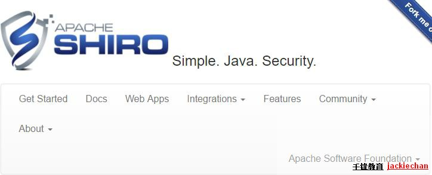
1.2功能简介
• 基本功能点如下图所示：
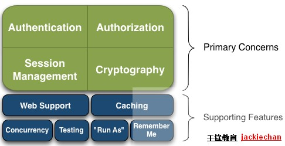
1.2.1 具体核心介绍
• Authentication：身份认证/登录，验证用户是不是拥有相应的身份； • Authorization：授权，即权限验证，验证某个已认证的用户是否拥有某个权限；即判断用 户是否能进行什么操作，如：验证某个用户是否拥有某个角色。或者细粒度的验证某个用户 对某个资源是否具有某个权限； • Session Manager：会话管理，即用户登录后就是一次会话，在没有退出之前，它的所有 信息都在会话中；会话可以是普通 JavaSE 环境，也可以是 Web 环境的； • Cryptography：加密，保护数据的安全性，如密码加密存储到数据库，而不是明文存储； • Web Support：Web 支持，可以非常容易的集成到Web 环境； • Caching：缓存，比如用户登录后，其用户信息、拥有的角色/权限不必每次去查，这样可 以提高效率； • Concurrency：Shiro 支持多线程应用的并发验证，即如在一个线程中开启另一个线程，能 • 把权限自动传播过去； • Testing：提供测试支持； • Run As：允许一个用户假装为另一个用户（如果他们允许）的身份进行访问； • Remember Me：记住我，这个是非常常见的功能，即一次登录后，下次再来的话不用登 录了
二 Shiro 架构
• 从外部来看Shiro ，即从应用程序角度的来观察如何使用 Shiro 完成
2.1工作架构图：
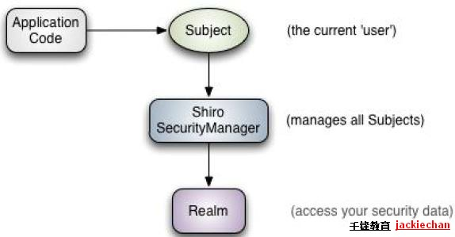
2.2 架构图介绍
• Subject：应用代码直接交互的对象是 Subject，也就是说 Shiro 的对外 API 核心就是 Subject。Subject 代表了当前“用户”，与 Subject 的所有交互都会委托给 SecurityManager； • SecurityManager：安全管理器；即所有与安全有关的操作都会与SecurityManager 交互；且其管理着所有 Subject；可以看出它是 Shiro的核心， 它负责与 Shiro 的其他组件进行交互，它相当于 SpringMVC 中DispatcherServlet 的角色 • Realm：Shiro 从 Realm 获取安全数据（如用户、角色、权限），就是说SecurityManager 要验证用户身份，那么它需要从 Realm 获取相应的用户进行比较以确定用户身份是否合法； 也需要从 Realm 得到用户相应的角色/权限进行验证用户是否能进行操作；可以把 Realm 看成 DataSource
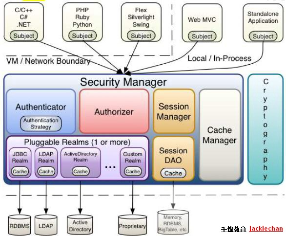
Shiro 架构 • Subject：任何可以与应用交互的“用户”； • SecurityManager ：相当于SpringMVC 中的 DispatcherServlet；是 Shiro 的心脏； 所有具体的交互都通过 SecurityManager 进行控制；它管理着所有 Subject、且负责进 行认证、授权、会话及缓存的管理。 • Authenticator：负责 Subject 认证，是一个扩展点，可以自定义实现；可以使用认证 策略（Authentication Strategy），即什么情况下算用户认证通过了； • Authorizer：授权器、即访问控制器，用来决定主体是否有权限进行相应的操作；即控 制着用户能访问应用中的哪些功能； • Realm：可以有 1 个或多个 Realm，可以认为是安全实体数据源，即用于获取安全实体 的；可以是JDBC 实现，也可以是内存实现等等；由用户提供；所以一般在应用中都需要 实现自己的 Realm； • SessionManager：管理 Session 生命周期的组件；而 Shiro 并不仅仅可以用在 Web 环境，也可以用在如普通的 JavaSE 环境 • CacheManager：缓存控制器，来管理如用户、角色、权限等的缓存的；因为这些数据 基本上很少改变，放到缓存中后可以提高访问的性能 • Cryptography：密码模块，Shiro 提高了一些常见的加密组件用于如密码加密/解密。
三 HelloWorld
3.1 pom 文件
xxxxxxxxxx <dependency> <groupId>org.apache.shiro</groupId> <artifactId>shiro-all</artifactId> <version>1.4.0</version> <type>pom</type> </dependency> <dependency> <groupId>org.slf4j</groupId> <artifactId>slf4j-api</artifactId> <version>1.7.12</version> </dependency> <dependency> <groupId>org.slf4j</groupId> <artifactId>slf4j-log4j12</artifactId> <version>1.7.12</version> </dependency> <dependency> <groupId>log4j</groupId> <artifactId>log4j</artifactId> <version>1.2.16</version> </dependency><!-- https://mvnrepository.com/artifact/org.springframework/spring-webmvc --><dependency> <groupId>org.springframework</groupId> <artifactId>spring-webmvc</artifactId> <version>4.3.13.RELEASE</version></dependency>3.1.1 代码
代码参考 shiro 源码中的入门案例
3.2集成 Spring
• 参照下载的 shiro 源码中的samples\spring 配置web.xml 文件和 Spring 的配置文件
3.3与Web 集成
• Shiro 提供了与 Web 集成的支持，其通过一个ShiroFilter 入口来拦截需要安全控制的URL，然后进行相应的控制 • ShiroFilter 类似于如 Strut2/SpringMVC 这种web 框架的前端控制器，是安全控制的入口点，其负责读取配置（如ini 配置文件），然后判断URL 是否需要登录/权限等工作。
3.3.1 ShiroFilter 的工作原理
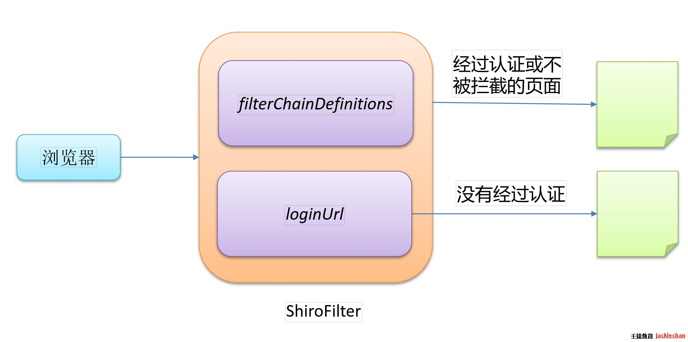
浏览器
ShiroFilter
filterChainDefinitions
loginUrl
没有经过认证
经过认证或不 被拦截的页面
3.3.2 配置ShiroFilter
• DelegatingFilterProxy 作用是自动到 Spring 容器查找名字为 shiroFilter（filter-name）的 bean 并把所有 Filter 的操作委托给它。
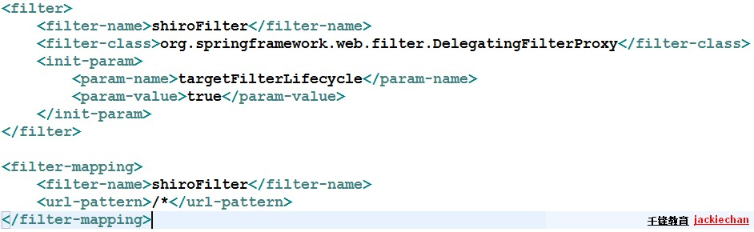
部分细节 • [urls] 部分的配置，其格式是： “url=拦截器[参数]，拦截器[参数]”； • 如果当前请求的 url 匹配 [urls] 部分的某个 url 模式，将会执行其配置的拦截器。 • anon（anonymous） 拦截器表示匿名访问（即不需要登录即可访问） • authc （authentication）拦截器表示需要身份认证通过后才能访问
三 shiro中默认的过滤器
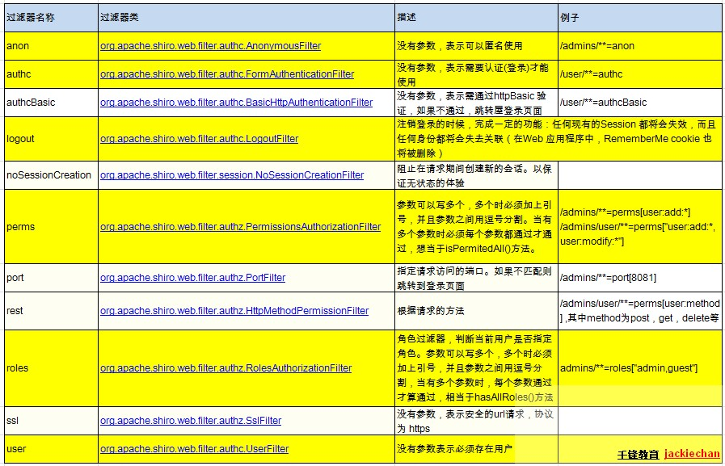
3.1URL 匹配模式
• url 模式使用 Ant 风格模式 • Ant 路径通配符支持 ?、*、**，注意通配符匹配不 包括目录分隔符“/”： – ?：匹配一个字符，如 /admin? 将匹配 /admin1，但不 匹配 /admin 或 /admin/； – *：匹配零个或多个字符串，如 /admin 将匹配 /admin、 /admin123，但不匹配 /admin/1； – **：匹配路径中的零个或多个路径，如 /admin/** 将匹 配 /admin/a 或 /admin/a/b
3.2URL 匹配顺序
• URL 权限采取第一次匹配优先的方式，即从头开始 使用第一个匹配的 url 模式对应的拦截器链。 • 如： – /bb/**=filter1 – /bb/aa=filter2 – /**=filter3 – 如果请求的url是“/bb/aa”，因为按照声明顺序进行匹 配，那么将使用 filter1 进行拦截。
四 认证
4.1流程：

4.2身份验证
• 身份验证：一般需要提供如身份 ID 等一些标识信息来表明登录者的身份，如提供 email，用户名/密码来证明。
• 在 shiro 中，用户需要提供 principals （身份）和 credentials（证明）给 shiro，从而应用能验证用户身份：
• principals：身份，即主体的标识属性，可以是任何属性，如用户名、邮箱等，唯一即可。一个主体可以有多个 principals，但只有一个 Primary principals，一般是用户名/邮箱/手机号。 • credentials：证明/凭证，即只有主体知道的安全值，如密码/数字证书等。 • 最常见的 principals 和 credentials 组合就是用户名/密码了
4.3身份验证基本流程
• 1、收集用户身份/凭证，即如用户名/密码 • 2、调用 Subject.login 进行登录，如果失败将得到相应的 AuthenticationException 异常，根据异常提示用户 错误信息；否则登录成功 • 3、创建自定义的 Realm 类，继承org.apache.shiro.realm.AuthorizingRealm 类，实现doGetAuthenticationInfo() 方法
4.4身份验证示例
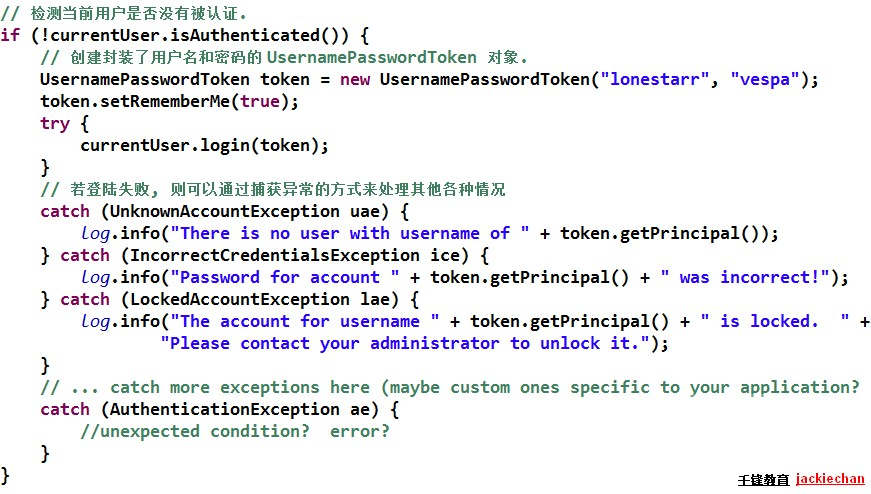
4.5AuthenticationException
• 如果身份验证失败请捕获 AuthenticationException 或其子类 • 最好使用如“用户名/密码错误”而不是“用户名错误”/“密码错误”，防止一些恶意用户非法扫描帐号库；
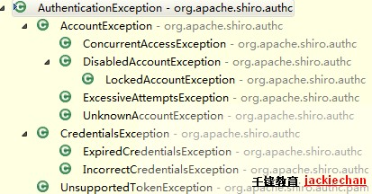
4.6认证流程
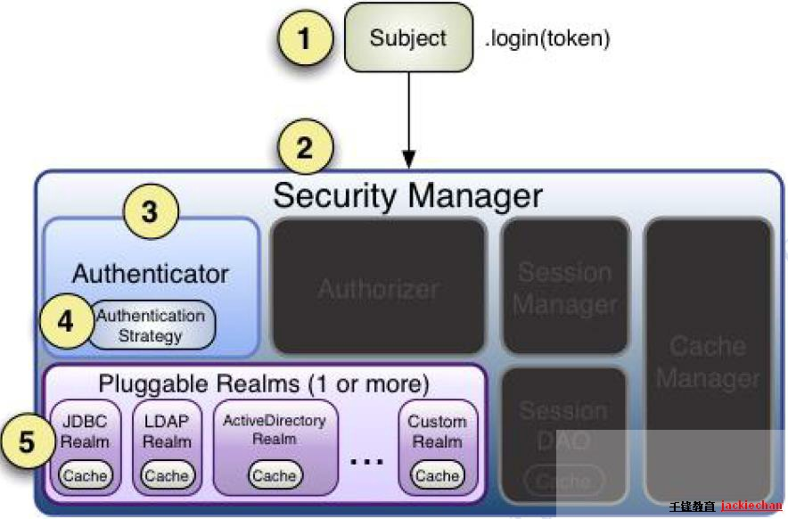
4.6.1身份认证流程
• 1、首先调用 Subject.login(token) 进行登录，其会自动委托给SecurityManager • 2、SecurityManager 负责真正的身份验证逻辑；它会委托给Authenticator 进行身份验证； • 3、Authenticator 才是真正的身份验证者，Shiro API 中核心的身份认证入口点，此处可以自定义插入自己的实现； • 4、Authenticator 可能会委托给相应的 AuthenticationStrategy 进行多 Realm 身份验证，默认 ModularRealmAuthenticator 会调用AuthenticationStrategy 进行多 Realm 身份验证； • 5、Authenticator 会把相应的 token 传入 Realm，从 Realm 获取身份验证信息，如果没有返回/抛出异常表示身份验证失败了。此处 可以配置多个Realm，将按照相应的顺序及策略进行访问。
五 Realm
• Realm：Shiro 从 Realm 获取安全数据（如用户、角色、权限），即 SecurityManager 要验证用户身份，那么它需要从 Realm 获取相应的用户进行比较以确定用户身份是否合法；也需要从Realm得到用户相应的角色/权限进行验证用户是否能进行操作
5.1 Realm接口如下：
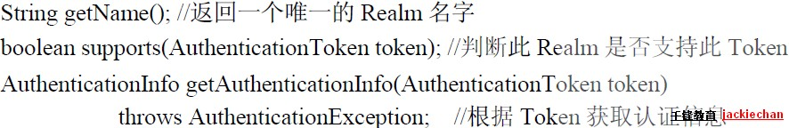
• 一般继承 AuthorizingRealm（授权）即可；其继承了AuthenticatingRealm（即身份验证），而且也间接继承了CachingRealm（带有缓存实现）。
5.2Realm 的继承关系：
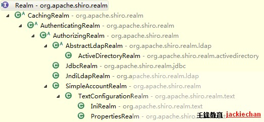
六 其他常见类
6.1Authenticator
• Authenticator 的职责是验证用户帐号，是 Shiro API 中身份验证核心的入口点：如果验证成功，将返回AuthenticationInfo 验 证信息；此信息中包含了身份及凭证；如果验证失败将抛出相应的 AuthenticationException 异常 • SecurityManager 接口继承了 Authenticator，另外还有一个ModularRealmAuthenticator实现，其委托给多个Realm 进行 验证，验证规则通过 AuthenticationStrategy 接口指定
6.2AuthenticationStrategy
realm 的认证方式
6.2.1AuthenticationStrategy 接口的默认实现：
• FirstSuccessfulStrategy：只要有一个 Realm 验证成功即可，只返回第一个 Realm 身份验证成功的认证信息，其他的忽略； • AtLeastOneSuccessfulStrategy：只要有一个Realm验证成功即可，和FirstSuccessfulStrategy 不同，将返回所有Realm身份验证成功的认证信息； • AllSuccessfulStrategy：所有Realm验证成功才算成功，且返回所有Realm身份验证成功的认证信息，如果有一个失败就失败了。 • ModularRealmAuthenticator 默认是 AtLeastOneSuccessfulStrategy 策略
七 授权
• 授权，也叫访问控制，即在应用中控制谁访问哪些资源（如访问页面/编辑数据/页面操作等）。在授权中需了解的几个关键对象：主体（Subject）、资源（Resource）、权限（Permission）、角色（Role）。 • 主体(Subject)：访问应用的用户，在 Shiro 中使用 Subject 代表该用户。用户只有授权后才允许访问相应的资源。 • 资源(Resource)：在应用中用户可以访问的 URL，比如访问 JSP 页面、查看/编辑某些数据、访问某个业务方法、打印文本等等都是资源。用户只要授权后才能访问。 • 权限(Permission)：安全策略中的原子授权单位，通过权限我们可以表示在应用中用户有没有操作某个资源的权力。即权限表示在应用中用户能不能访问某个资源，如：访问用户列表页面查看/新增/修改/删除用户数据（即很多时候都是CRUD（增查改删）式权限控制）等。权限代表了用户有没有操作某个资源的权利，即反映在某个资源上的操作允不允许。 • Shiro 支持粗粒度权限（如用户模块的所有权限）和细粒度权限（操作某个用户的权限，即实例级别的） • 角色(Role)：权限的集合，一般情况下会赋予用户角色而不是权限，即这样用户可以拥有一组权限，赋予权限时比较方便。典型的如：项目经理、技术总监、CTO、开发工程师等都是角色，不同的角色拥有一组不同的权限。
7.1授权方式
• Shiro 支持三种方式的授权： – 编程式：通过写if/else 授权代码块完成 – 注解式：通过在执行的Java方法上放置相应的注解完成，没有权限将抛出相应的异常 – JSP/GSP 标签：在JSP/GSP 页面通过相应的标签完成
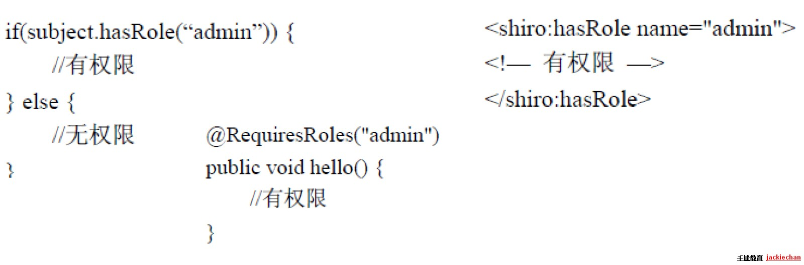
7.2默认拦截器
• Shiro 内置了很多默认的拦截器，比如身份验证、授权等相关的。默认拦截器可以参考org.apache.shiro.web.filter.mgt.DefaultFilter中的枚举
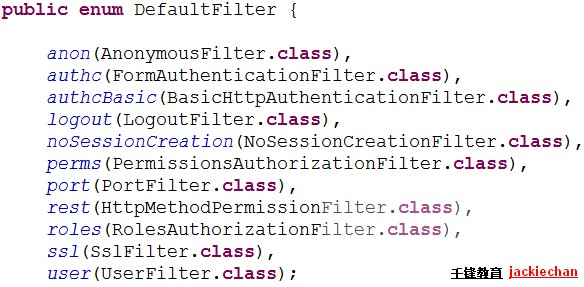
7.2.1身份验证相关的
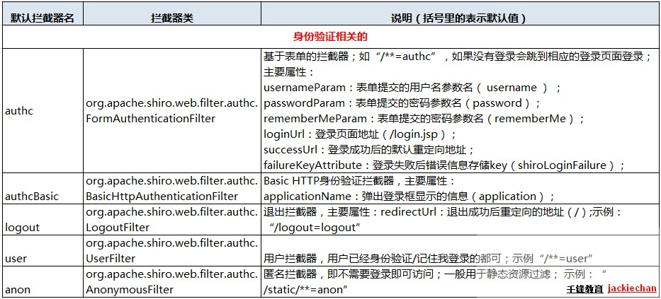
7.2.2授权相关的
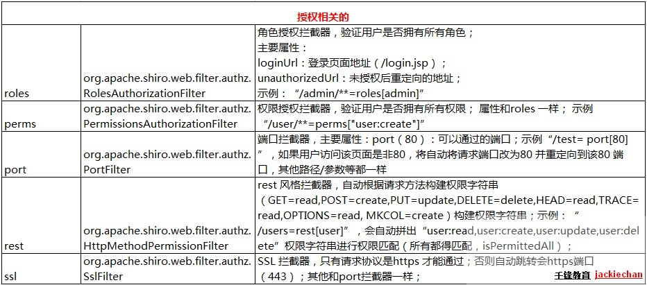
7.2.3其他
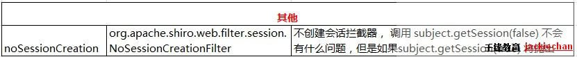
八 Permissions
8.1规则：资源标识符
对象实例 ID 即对哪个资源的哪个实例可以进行什么操作. 其默认支持通配符权限字符串，: 表示资源/操作/实例的分割；, 表示操作的分割，* 表示任意资源/操作/实例。
8.2 多层次管理：
– 例如：user:query、user:edit – 冒号是一个特殊字符，它用来分隔权限字符串的下一部件：第一部分是权限被操作的领域（打印机），第二部分是被执行的操作。 – 多个值：每个部件能够保护多个值。因此，除了授予用户 user:query和 user:edit 权限外，也可以简单地授予他们一个：user:query, edit – 还可以用 * 号代替所有的值，如：user:* ， 也可以写：*:query，表示某个用户在所有的领域都有 query 的权限
8.3实例级访问控制
– 这种情况通常会使用三个部件：域、操作、被付诸实施的实例。如：user:edit:manager – 也可以使用通配符来定义，如：user:edit:*、user:*:*、 user:*:manager – 部分省略通配符：缺少的部件意味着用户可以访问所有与之匹配的值，比如：user:edit 等价于 user:edit :*、user 等价于 user:*:* – 注意：通配符只能从字符串的结尾处省略部件，也就是说 user:edit 并不等价于 user:*:edit
九 授权流程
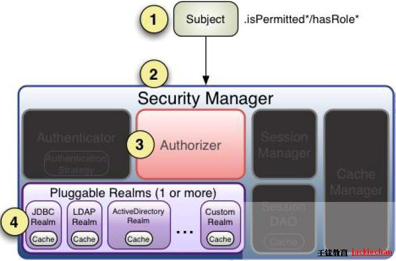
9.1流程如下：
• 1、首先调用 Subject.isPermitted*/hasRole* 接口，其会委托给SecurityManager，而 SecurityManager 接着会委托给 Authorizer； • 2、Authorizer是真正的授权者，如果调用如isPermitted(“user:view”)，其首先会通过 PermissionResolver 把字符串转换成相应的 Permission 实例； • 3、在进行授权之前，其会调用相应的 Realm 获取 Subject 相应的角色/权限用于匹配传入的角色/权限； • 4、Authorizer 会判断 Realm 的角色/权限是否和传入的匹配，如果有多个Realm，会委托给 ModularRealmAuthorizer 进行循环判断， 如果匹配如 isPermitted*/hasRole* 会返回true，否则返回false表示授权失败。
9.2 ModularRealmAuthorizer
• ModularRealmAuthorizer 进行多 Realm 匹配流程： – 1、首先检查相应的 Realm 是否实现了实现了Authorizer； – 2、如果实现了 Authorizer，那么接着调用其相应的isPermitted*/hasRole* 接口进行匹配； – 3、如果有一个Realm匹配那么将返回 true，否则返回 false。
十 Shiro 标签
• Shiro 提供了 JSTL 标签用于在 JSP 页面进行权限控制，如根据登录用户显示相应的页面按钮。
10.1 guest 标签
用户没有身份验证时显示相应信息，即游客访问信息：
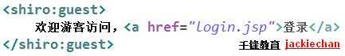
10.2 user 标签：
用户已经经过认证/记住我登录后显示相应的信息。
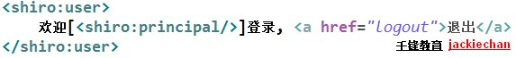
10.3 authenticated 标签：
用户已经身份验证通过，即记住我 Subject.login登录成功，不是记住我登录的
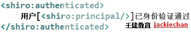
10.4 notAuthenticated 标签：
用户未进行身份验证，即没有调用Subject.login进行登录，包括记住我自动登录的也属于未进行身份验证。

10.5 pincipal 标签：
显示用户身份信息，默认调用 Subject.getPrincipal() 获取，即 Primary Principal。
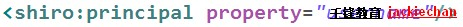
10.6 hasRole 标签：
如果当前 Subject 有角色将显示 body 体内容：
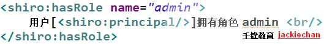
10.7 hasAnyRoles 标签：
如果当前Subject有任意一个角色（或的关系）将显示body体内容。
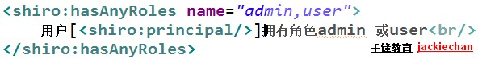
10.9 lacksRole：
如果当前 Subject 没有角色将显示 body 体内容

10.9 hasPermission：
如果当前 Subject 有权限将显示 body 体内容
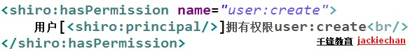
1.10 lacksPermission：
如果当前Subject没有权限将显示body体内容。
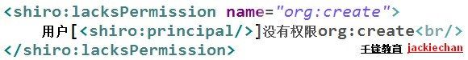
十一 权限注解
• @RequiresAuthentication：表示当前Subject已经通过login 进行了身份验证；即 Subject. isAuthenticated() 返回 true
• @RequiresUser：表示当前 Subject 已经身份验证或者通过记住我登录的。
• @RequiresGuest：表示当前Subject没有身份验证或通过记住我登录过，即是游客身份。
• @RequiresRoles(value={“admin”, “user”}, logical= Logical.AND)：表示当前 Subject 需要角色 admin 和user
• @RequiresPermissions (value={“user:a”, “user:b”}, logical= Logical.OR)：表示当前 Subject 需要权限 user:a 或
user:b。
• @RequiresPermissions (value={“user:a”, “user:b”}, logical= Logical.OR)：表示当前 Subject 需要权限 user:a 或
user:b。十二 会话管理
12.1 概述
• Shiro 提供了完整的企业级会话管理功能，不依赖于底层容器（如web容器tomcat），不管 JavaSE 还是 JavaEE 环境都可以使用，提供了会话管理、会话事件监听、会话存储/持久化、容器无关的集群、失效/过期支持、对Web 的透明支持、SSO 单点登录的支持等特性。
12.2 会话相关的 API
• Subject.getSession()：即可获取会话；其等价于 Subject.getSession(true)，即如果当前没有创建 Session 对象会创建一个；Subject.getSession(false)，如果当前没有创建 Session 则返回null • session.getId()：获取当前会话的唯一标识 • session.getHost()：获取当前Subject的主机地址 • session.getTimeout() & session.setTimeout(毫秒)：获取/设置当 前Session的过期时间 • session.getStartTimestamp() & session.getLastAccessTime()：获取会话的启动时间及最后访问时间；如果是 JavaSE 应用需要自己定期调用 session.touch() 去更新最后访问时间；如果是 Web 应用，每次进入 ShiroFilter 都会自动调用 session.touch() 来更新最后访问时间。 • session.touch() & session.stop()：更新会话最后访问时间及销毁会话；当Subject.logout()时会自动调用 stop 方法来销毁会话。如果在web中，调用 HttpSession. invalidate() 也会自动调用Shiro Session.stop 方法进行销毁Shiro 的会话 • session.setAttribute(key, val) & session.getAttribute(key) & session.removeAttribute(key)：设置/获取/删除会话属性；在整个会话范围内都可以对这些属性进行操作
12.3 会话监听器
会话监听器用于监听会话创建、过期及停止事件
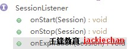
12.4 SessionDao
sessionDao 的目的是对 session 进行操作,这样我们可以不用每次都创建 session, 只需要对其保存即可,可以应用在分布式场景对 session 进行同步

• AbstractSessionDAO 提供了 SessionDAO 的基础实现，如生成会话ID等 • CachingSessionDAO 提供了对开发者透明的会话缓存的功能，需要设置相应的 CacheManager • MemorySessionDAO 直接在内存中进行会话维护 • EnterpriseCacheSessionDAO 提供了缓存功能的会话维护，默认情况下使用 MapCache 实现，内部使用ConcurrentHashMap 保存缓存的会话。
12.5 配置示例
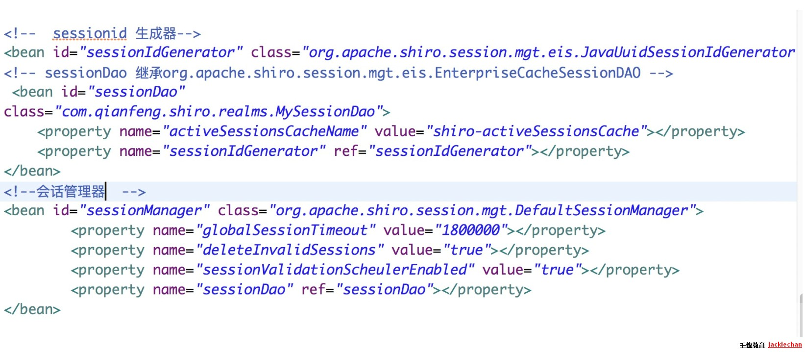
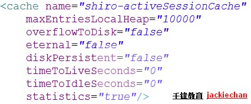
12.6使用redis缓存session
12.6.1Session Dao
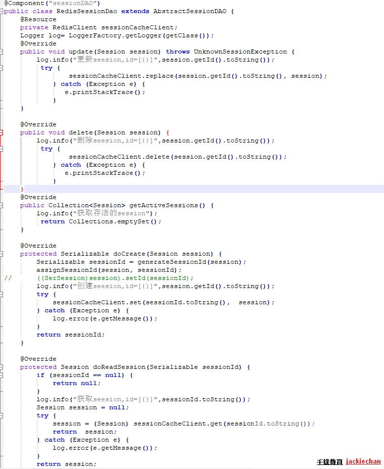
12.6.2 SerializableUtils
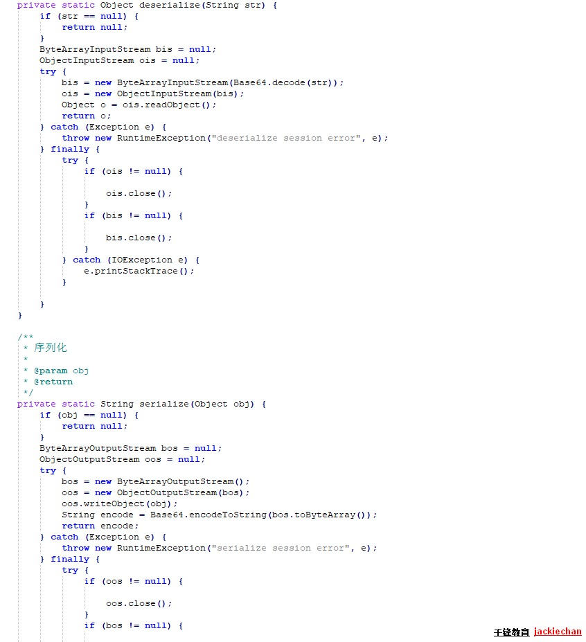
十三 会话验证
• Shiro 提供了会话验证调度器，用于定期的验证会话是否已过期，如果过期将停止会话 • 出于性能考虑，一般情况下都是获取会话时来验证会话是否过期并停止会话的；但是如在 web 环境中，如果用户不 主动退出是不知道会话是否过期的，因此需要定期的检测会话是否过期，Shiro 提供了会话验证调度器SessionValidationScheduler • Shiro 也提供了使用Quartz会话验证调度器：QuartzSessionValidationScheduler
十四 缓存
14.1 CacheManagerAware 接口
• Shiro 内部相应的组件（DefaultSecurityManager）会自动检测相应的对象（如Realm）是否实现了CacheManagerAware 并自动注入相应的CacheManager。
14.2 Realm 缓存
• Shiro 提供了 CachingRealm，其实现了CacheManagerAware 接口，提供了缓存的一些基础实现； • AuthenticatingRealm 及 AuthorizingRealm 也分别提供了对AuthenticationInfo 和 AuthorizationInfo 信息的缓存。
14.3 Session 缓存
• 如 SecurityManager 实现了 SessionSecurityManager，其会判断 SessionManager 是否实现了CacheManagerAware 接口，如果实现了会把CacheManager 设置给它。 • SessionManager 也会判断相应的 SessionDAO（如继承自CachingSessionDAO）是否实现了CacheManagerAware，如果实现了会把 CacheManager设置给它 • 设置了缓存的 SessionManager，查询时会先查缓存，如果找不到才查数据库。
十五 RememberMe
15.1 概述
• Shiro 提供了记住我（RememberMe）的功能，比如访问如淘宝等一些网站时，关闭了浏览器，下次再打开时还是能记住你是谁，下次访问时无需再登录即可访问，基本流程如下： • 1、首先在登录页面选中 RememberMe 然后登录成功；如果是浏览器登录，一般会把 RememberMe 的Cookie 写到客户端并保存下来； • 2、关闭浏览器再重新打开；会发现浏览器还是记住你的； • 3、访问一般的网页服务器端还是知道你是谁，且能正常访问； • 4、但是比如我们访问淘宝时，如果要查看我的订单或进行支付时，此时还是需要再进行身份认证的，以确保当前用户还是你。
15.2 认证和记住我
• subject.isAuthenticated() 表示用户进行了身份验证登录的，即使有 Subject.login 进行了登录； • subject.isRemembered()：表示用户是通过记住我登录的，此时可能并不是真正的你（如你的朋友使用你的电脑，或者你的cookie 被窃取）在访问的 • 两者二选一，即 subject.isAuthenticated()==true，则subject.isRemembered()==false；反之一样。
15.3 建议
• 访问一般网页：如个人在主页之类的，我们使用user 拦截器即可，user 拦截器只要用户登录(isRemembered() || isAuthenticated())过即可访问成功； • 访问特殊网页：如我的订单，提交订单页面，我们使用authc 拦截器即可，authc 拦截器会判断用户是否是通过Subject.login（isAuthenticated()==true）登录的，如果是才放行，否则会跳转到登录页面叫你重新登录。
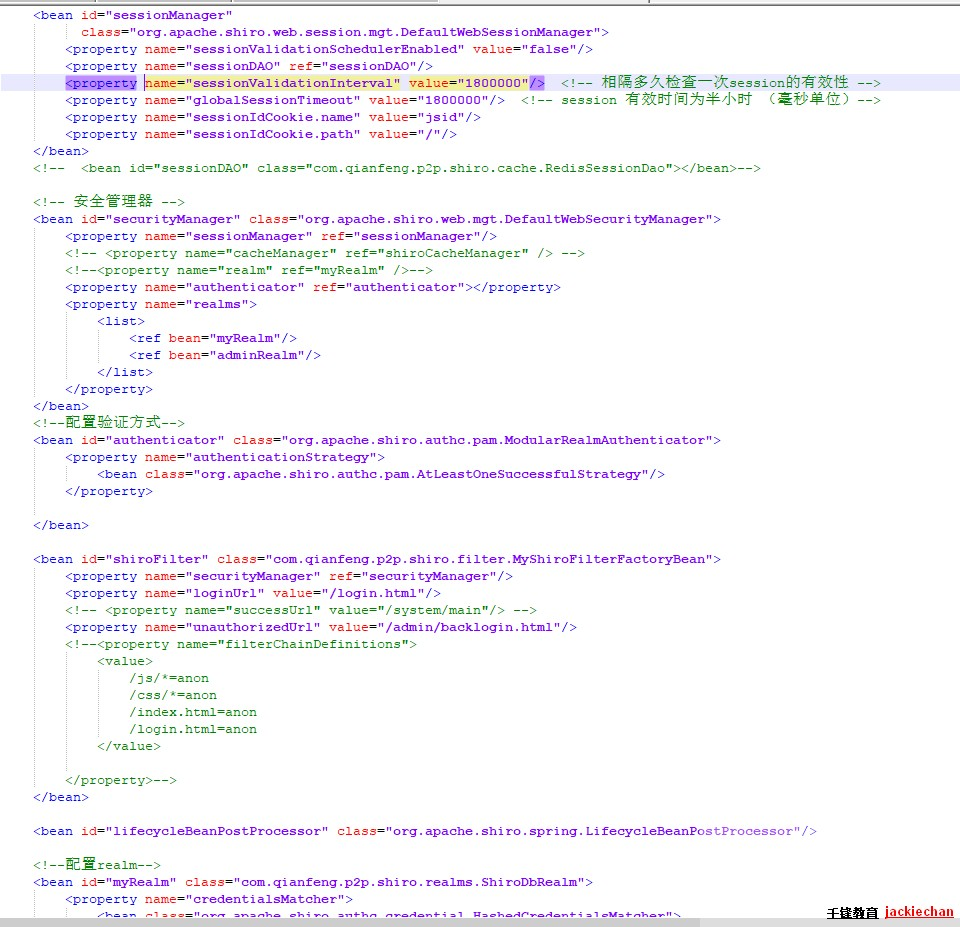
15.4 实现
• 如果要自己做RememeberMe，需要在登录之前这样创建Token： UsernamePasswordToken(用户名，密码，是否记住我)，且调用 UsernamePasswordToken 的：token.setRememberMe(true); 方法
配置